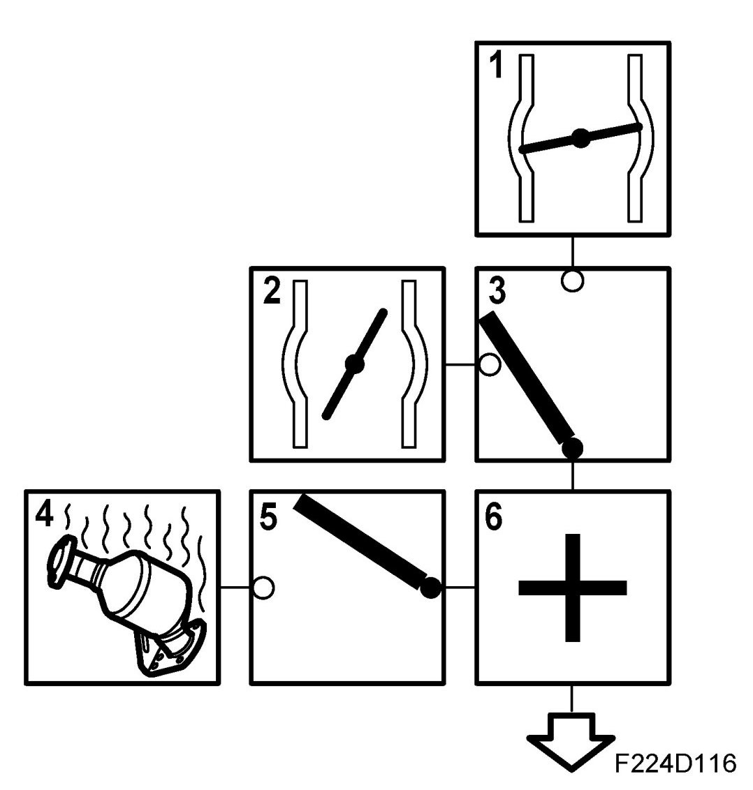
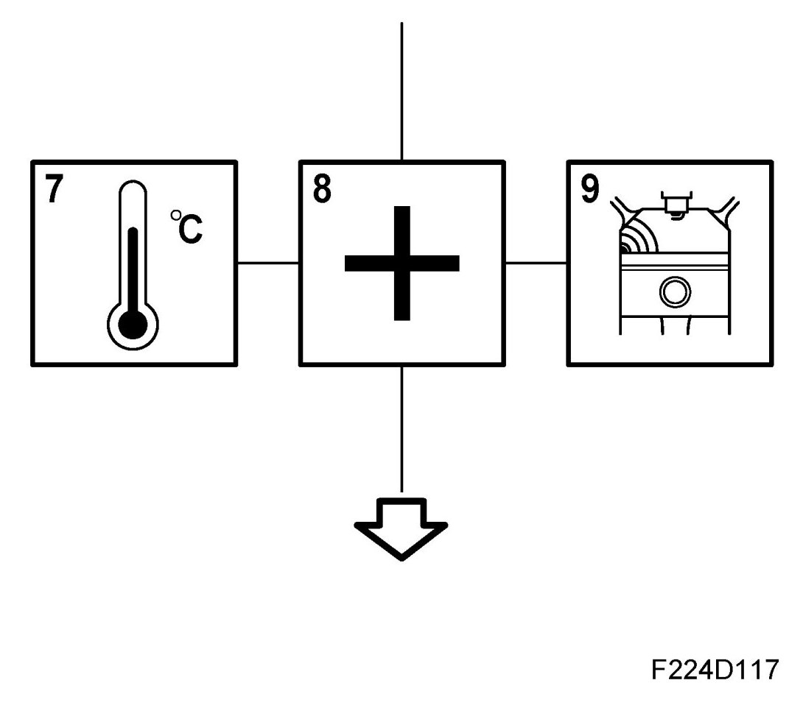
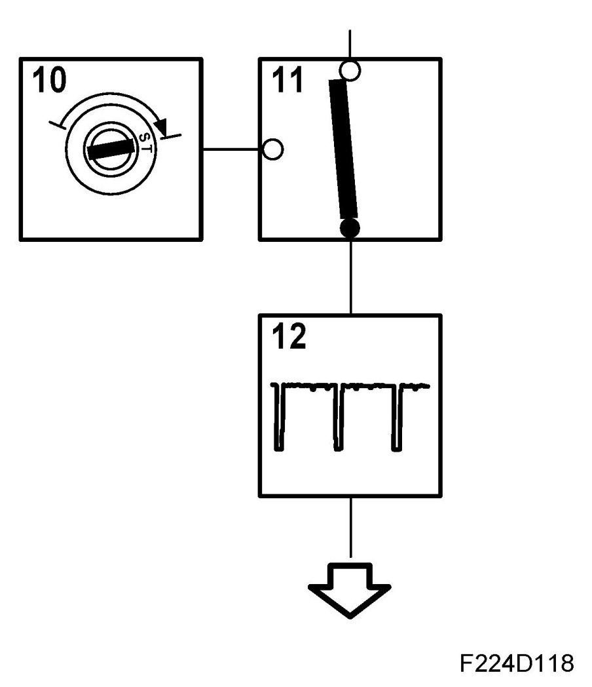

Ignition, Basic Function
Ignition, Basic Function
1. Idling speed ignition timing

When idle speed control is active, the ignition timing is adjusted to stabilize idling speed. The value is sent to box 3.
2. Normal ignition timing
When the idle speed control is not active, the ignition timing is obtained from a load and speed-dependent matrix. The matrix value is optimized for the lowest fuel consumption (best torque). The value is sent to box 3.
3. Selection of ignition timing
One of the ignition timing calculations is selected, depending on which function is active. The value is sent to box 6.
4. Catalytic converter heating ignition
In order to heat the catalytic converter as fast as possible after starting, the ignition will be retarded. The value is load and engine speed dependent.
5. Engagement of catalytic converter heating ignition
The function is active when the coolant temperature is above -8 degrees C and below +35 degrees C.
6. Total
The value from box 5 is added to the value from box 3.
7. Compensation

The ignition timing is corrected depending on the engine coolant temperature and intake air temperature. The value is sent to box 6.
8. Knock control
If knocking occurs, the amount by which the ignition should be retarded is calculated. The value is sent to box 6.
9. Total
The compensation angle and knock retardation are added to the current ignition timing. The value is sent to box 7.
10. Selection of ignition timing

Starting ignition timing is selected when the engine has not yet started. The value is sent to box 9.
11. Starting ignition timing
Starting ignition timing is calculated depending on intake air temperature and engine coolant temperature. The value is sent to box 9 via box 7.
12. Activate relevant trigger
At the calculated crankshaft angle, the microprocessor controls the transistor for the trigger which is next in the firing order.